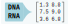

Changelog
Source:NEWS.md
GenomicDataStream 0.0.16
- Feb 12, 2025
- add
MAF/minVariancefilter toGenomicDataStream()and backend C++ code - add colnames to
coefandse
GenomicDataStream 0.0.15
- Feb 5, 2025
-
GenomicDataStreamcan parse genetics file one time, then usesetRegion()multiple times to query different regions - changes to
vcfstream.h,pgenstream.h,bgenstream.hto allow single initialization and multiple queries withsetRegion()multiple times - fix issue with
vcfstream::setRegions()failing when empty region was used after a valid region
GenomicDataStream 0.0.10
- Jan 23, 2025
- update to
pgenlibrv0.4.0 - move regression to separate package
- remove
src/zstd-1.1.0
GenomicDataStream 0.0.9
- Dec 18, 2024
- use
fitLinReg0.0.5 - check BH (== 1.84.0.0) since 1.87.0-1 is not compatible with boost in bgen library